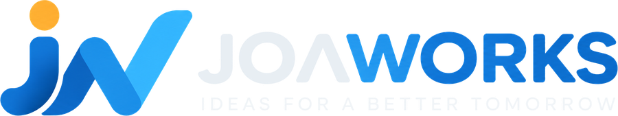

Software for Better Work & Better Experience
회사 소개
JOAWORKS(조아웍스)는 모바일 애플리케이션, 오디오 분석 소프트웨어, AI 기반 소프트웨어 및 웹 서비스를 개발합니다.
사람에게 실제로 도움이 되는 기술을 만들고, 복잡한 기술을 보다 쉽고 유용하게 전달하는 것을 중요하게 생각합니다.
Mobile Application Development
Android 애플리케이션 설계 및 개발
Audio Measurement Software
실시간 오디오 분석 및 음향 측정 소프트웨어 개발
AI Software Development
AI 기반 소프트웨어 개발
Web Service Development
웹 서비스 설계 및 개발
Business Software Development
기업·업무용 소프트웨어 개발
Custom Application Development
고객 요구사항에 맞춘 맞춤형 애플리케이션 개발
Brand Story
JOAWORKS는 예수님이 보여주신 사랑과 섬김의 가치를 바탕으로, 사람에게 도움이 되는 아이디어를 기술로 실현하고 더 나은 내일을 만들어갑니다.
Inspired by the love and service of Jesus, we create technology that serves people and brings positive change.
왼쪽 심볼은 JOAWORKS의 J와 W를 바탕으로 디자인되었으며, 동시에 앞으로 나아가는 한 사람의 모습을 형상화했습니다. 이는 기술의 중심에는 언제나 사람이 있다는 JOAWORKS의 생각을 담고 있습니다.
Orange Circle — Light & Hope
주황색 원은 사람의 머리이자 떠오르는 아이디어, 그리고 빛과 소망을 상징합니다. 어두운 곳을 밝히는 작은 빛처럼, 하나의 아이디어가 누군가의 삶을 더 나은 방향으로 변화시킬 수 있다고 믿습니다.
J — JOAWORKS & Jesus
JOAWORKS의 첫 글자 J이면서, 사랑과 섬김의 본을 보여주신 Jesus를 떠올리게 합니다. 이는 기술보다 사람을 먼저 생각하겠다는 JOAWORKS의 가치와 방향을 담고 있습니다.
Human Shape — People First
심볼 전체는 앞으로 나아가는 한 사람의 모습을 표현합니다. JOAWORKS는 사람을 위한 기술, 사람에게 실제로 도움이 되는 제품과 서비스를 지향합니다.
W — Works & Calling
WORKS의 W를 형상화했습니다. 오른쪽 위로 뻗어 나가는 형태는 성장과 도전을 의미하며, 맡겨진 일을 성실하게 수행하는 자세와 소명을 담고 있습니다.
Blue — Trust & Integrity
파란색은 신뢰, 정직, 책임감과 전문성을 상징합니다. 새로운 것을 만드는 데 그치지 않고, 사용자가 믿고 사용할 수 있는 제품을 만드는 것을 중요하게 생각합니다.
IDEAS FOR A BETTER TOMORROW
JOAWORKS가 말하는 Better Tomorrow는 단순히 더 발전된 기술만을 뜻하지 않습니다. 사람을 존중하고 서로를 섬기며, 우리가 가진 재능과 기술로 세상에 선한 영향력을 더하는 미래를 의미합니다.
Love. Serve. Create. Better Tomorrow.
사람을 사랑하고 섬기며, 좋은 아이디어와 기술을 통해 더 나은 내일을 만들어갑니다.
Products
SELAH RTA
Real-Time Audio Analysis & Measurement Application
SELAH RTA는 모바일 환경에서 실시간 오디오 분석과 음향 측정을 지원하는 오디오 분석 애플리케이션입니다.